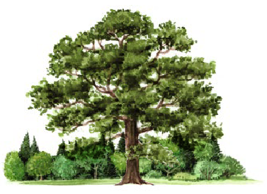
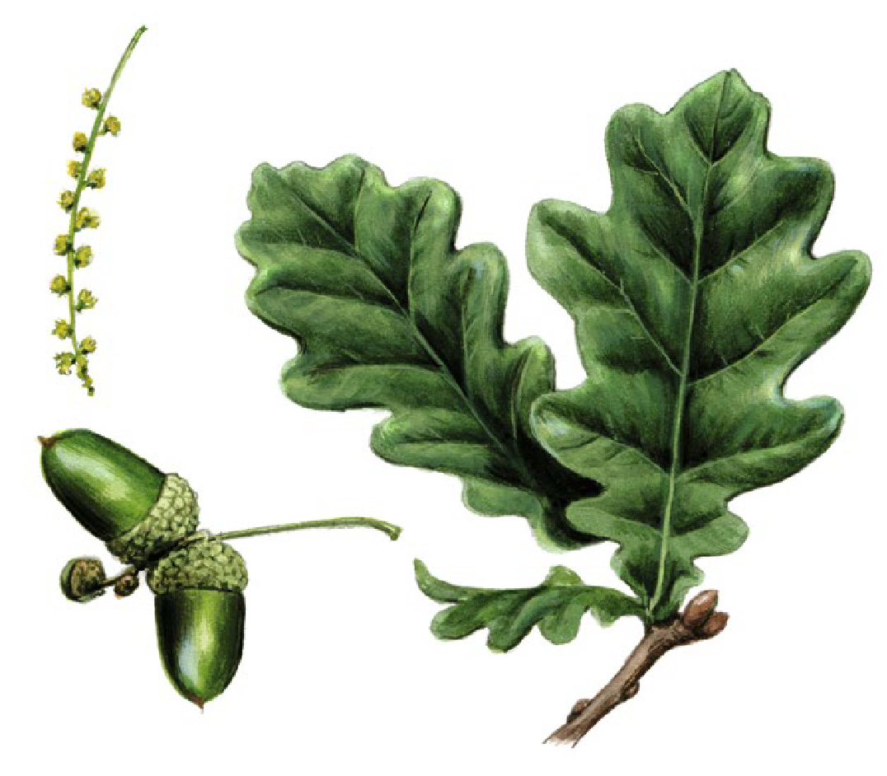
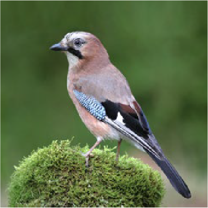

Ahorn
Die
Eiche
Steckbrief
Quercus spec.

Lebensalter: bis 800 Jahre, einzelne Exemplare bis 1.000 Jahre
Höhe: 30 bis 40 m
Anteil am deutschen Wald: 10%
Typische Standorte: Auen, Tiefland, Vorbergland

Blüten, Früchte und Blätter der Stieleiche
„Die“ deutsche Eiche gibt es nicht: Von den weltweit mehr als 600 Arten sind in Deutschland vor allem Stiel- und Traubeneichen verbreitet. Am Fruchtansatz lassen sich die Arten unterscheiden: Bei der Stieleiche sitzen die Eicheln an langen Stielen, bei Traubeneichen finden sich die Früchte am Zweig traubenartig gehäuft. Eichen gehören zu den wertvollsten Bäumen im Wald. Mehr als 1.000 Tier- und Pflanzenarten dient der Baum als Lebensraum und Nahrungsquelle. Und in der Geschichte der Menschen wäre vielleicht manches anders verlaufen ohne die Eiche: Die Schiffe, mit denen Kolumbus & Co. in neue Welten aufbrachen – sie waren aus robustem Eichenholz gezimmert.

Der Eichelhäher hilft der Eiche beim Vermehren: Als Wintervorrat vergräbt er im Herbst Eicheln im Boden. Was er nicht wiederfindet, wächst oft zu neuen Bäumen heran.
Waldregel: bitte nichts zurücklassen
Über 1.000 Jahre können Eichen alt werden – noch länger „lebt“ im Wald meistens nur der Müll. Rund 4.000 Jahre dauert es, bis eine Glasflasche abgebaut ist. Plastik benötigt mehrere Hundert Jahre zum Verrotten, eine Blechdose rund 100 Jahre, eine weggeworfene Zigarettenkippe ist nach frühestens einem Jahr verschwunden. Müll im Wald ist weit mehr als ein ästhetisches Problem. Austretende Schadstoffe vergiften die Umwelt, für Wildtiere stellen die Hinterlassenschaften eine Verletzungsgefahr, manchmal gar eine Todesfalle dar. Die goldene Regel für jeden Waldbesuch lautet daher: Hinterlasse nichts – außer deinen Fußspuren.